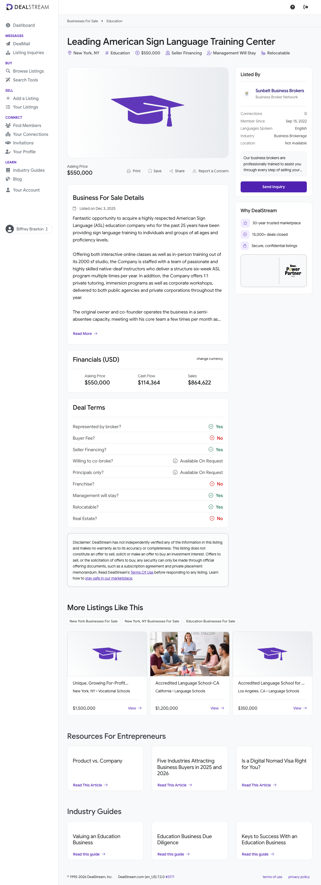

Industry-Fit Determination — read first
Determination: NOT an Applied Development add-on. Scored STANDALONE out of 100.
The target is an ASL training/instruction business — it sells classroom tuition for 6-week ASL
courses, 1:1 tutoring, and corporate awareness workshops. Its NAICS is 611699 / 611630
(schools / language instruction), not 541930 (translation & interpretation services).
Applied Development's add-on thesis is communications access — billable interpreting, CART and VRI delivered to
deaf consumers in real time, a different unit economics and sales motion from per-seat tuition. The business is
genuinely sign-language adjacent and deaf-community anchored (native-deaf instructors; the only Deaf-owned ASL
school in the nation; public-agency clients) and that adjacency is real strategic optionality — but it
does not make the core business a 541930 add-on. Per the skill rule, the +10 add-on line is reserved for genuine
541930 businesses; an ASL school is adjacent/uncertain, mapping to 10 of 20 on the Industry-match
line with no +10 bonus. Denominator = 100.
Buy Box Screening
| # | Criterion | Status | Evidence |
|---|
| 1 | ≥ 10 full-time employees | FAIL | Single 2,000 sq ft NYC studio, semi-absentee owner. ~20 native-deaf instructors on the public roster, but ASL schools staff instruction as per-class part-time/1099 labor; estimated core full-time headcount only 3–5. No FTE count disclosed. |
| 2 | EBITDA $1M–$4M / year | FAIL | Cash flow (SDE) disclosed at $114,364 — roughly one-ninth of the $1M floor. True EBITDA after a market manager salary is lower still. |
| 3 | 10+ years in business | PASS | Founded 2001 (Sign Language Center / SLC of New York Inc.); listing states "25 years in business." 25 ≥ 10. |
| 4 | 3+ yrs YoY revenue & profit growth | INSUFFICIENT | No per-year (2024/2025) revenue or profit split disclosed; a 3-year trend cannot be verified. |
| 5 | Asking price ≤ 4.0x EBITDA | FAIL | $550,000 ÷ $114,364 SDE = 4.81x SDE; the true EBITDA multiple is materially higher. Above the 4.0x ceiling. |
| 6 | DSCR > 1.4 (informational) | INSUFFICIENT | No financing terms, rate, or amortization disclosed. Informational only; not scored. |
Overall Buy Box: FAIL — 1 PASS, 3 FAIL, 2 insufficient. Sub-scale education business; SDE of ~$114K is an owner-operator income, not a platform or true add-on cash flow. Disposition: Passed.
Scorecard (26 fields)
| # | Field | Value | Source |
|---|
| 1 | Business Name | Leading American Sign Language Training Center (listing); likely Sign Language Center / SLC of New York Inc. | DealStream; website match |
| 2 | Lead Source | DealStream listing dnmrsc, Sunbelt Business Brokers, listed 2025-12-03 | Provided lead data |
| 3 | Years in business | 25 (founded 2001) | Listing; signlanguagecenter.com |
| 4 | Real estate owned | $0 — none; 2,000 sq ft NYC studio leased | Listing |
| 5 | FF&E value | Not disclosed (classroom furniture/AV/signage; est. <$50K) | Not disclosed |
| 6 | Full-time employees | 3–5 (est.) | Est. — see Appendix C |
| 7 | Part-time employees | 15–20 instructors (est.) | signlanguagecenter.com/teachers |
| 8 | Contractors / 1099 | Overlaps field 7 — instructors paid per class (est.) | Industry-norm est. |
| 9 | Business address | 39 East 30th Street, Suite 2R, New York, NY 10016 (est.) | signlanguagecenter.com |
| 10 | Revenue 2022 | Not disclosed | — |
| 11 | Revenue 2023 | Not disclosed | — |
| 12 | Revenue 2024 | Not disclosed | — |
| 13 | Revenue 2025 | Not disclosed (listing gives a single "Sales" figure of $864,622, period unspecified) | Listing |
| 14 | Net / FCF 2022 | Not disclosed | — |
| 15 | Net / FCF 2023 | Not disclosed | — |
| 16 | Net / FCF 2024 | Not disclosed | — |
| 17 | Net / FCF 2025 | Not disclosed (listing gives a single "Cash Flow / SDE" of $114,364, period unspecified) | Listing |
| 18 | Asking price | $550,000 | Listing |
| 19 | % revenue growth YoY | Cannot compute — no per-year revenue disclosed | — |
| 20 | Yearly revenue retention | Not disclosed | — |
| 21 | EBITDA margin | SDE margin 13.2% ($114,364 ÷ $864,622) — SDE proxy, not EBITDA | computed |
| 22 | Customer LTV | not disclosed | — |
| 23 | Customer CAC | not disclosed | — |
| 24 | Client concentration | Not disclosed | — |
| 25 | 2024 financials + YTD link | Not provided — request from Sunbelt broker | — |
| 26 | Lead Score | 37 / 100 | computed |
Score Breakdown
| Item | Awarded | Max | Justification |
|---|
| Industry match | 10 | 20 | ASL training/education — sign-language adjacent and deaf-community anchored, but not a core NAICS 541930 interpreting/CART add-on and not a named EarnedOut target industry. Adjacent/uncertain → 10. |
| EBITDA tier | 0 | 15 | SDE $114,364 ≤ $1M. Lowest tier → 0. |
| Years in business ≥10 | 10 | 10 | 25 years (founded 2001). |
| 3 yrs consistent growth | 0 | 10 | Insufficient data — no per-year revenue/profit disclosed. Not awarded. |
| Recurring revenue | 5 | 10 | Semester tuition with repeat enrollment and recurring corporate workshops — repeat but not contracted. Mixed → 5. |
| Customer concentration <20% | 0 | 5 | Insufficient data — concentration not disclosed. Not awarded. |
| Employees ≥10 | 0 | 10 | Est. 3–5 full-time; instructor pool is part-time/1099. Below 10 FTE. |
| Valuation multiple | 7 | 15 | $550K ÷ $114,364 SDE = 4.81x SDE, in the 4.0–5.5x band → 7. Multiple is on SDE, not EBITDA — true EBITDA multiple is worse. |
| Low owner dependence | 5 | 5 | Listing states semi-absentee owner; instructor team runs classes. |
| Roll-up / add-on strategic fit (BONUS) | N/A | — | Not a 541930 interpreting/CART add-on; no bonus line. Scored standalone out of 100. |
| Total | 37 | 100 | Interpretation band <50 — Pass. |
Valuation line is in the 4.0–5.5x band (7 pts): a deal would require negotiation to ≤4.0x EBITDA as a closing condition — but this is moot given the Buy Box FAIL on scale.
1. Executive Summary
- Company overview: A New York City ASL training school — almost certainly Sign Language Center (SLC of New York Inc.), founded 2001, a ~2,000 sq ft Murray Hill studio. Teaches 6-week structured ASL courses (in-person and Zoom), 1:1 tutoring, and corporate/agency awareness workshops, staffed by native-deaf instructors. The only Deaf-owned ASL school in the nation.
- Financial highlights: Sales $864,622; cash flow (SDE) $114,364 → ~13.2% SDE margin. No per-year revenue history disclosed. Asking $550,000 = 4.81x SDE.
- Buy Box summary: FAIL — meets only "10+ years in business." Misses the EBITDA floor by ~9x, misses the FTE floor, priced above the 4x ceiling.
- Why pursue (or not): Do not pursue. SDE of ~$114K is owner-operator income, not platform-scale or true add-on cash flow. The only thread worth keeping is the deaf-community brand adjacency to Applied Development — a talent/brand curiosity, not a needle-mover.
2. Company Overview
Background and history: Sign Language Center was established September 10, 2001 by co-founders Alan Roth and Brian Blais — both Deaf — making it, per its own materials, the only Deaf-owned ASL school in the nation and the longest-running ASL program in NYC. Alan Roth (Deaf since age 4 from spinal meningitis) served as CEO from founding until his passing in February 2023.
Ownership structure: Operates as SLC of New York Inc. Surviving co-founder Brian Blais is the presumed current owner and seller. The Feb-2023 death of the founding CEO is the most plausible sale motivation (listing states none).
Key milestones: 2001 — founded, Murray Hill studio established. ~2001–2023 — builds NYC's longest-running ASL school; adds Zoom classes and corporate/agency workshops. Feb 2023 — co-founder/CEO Alan Roth passes away. Dec 3, 2025 — listed for sale via Sunbelt Business Brokers on DealStream.
Org structure: Lean — a small administrative core plus a roster of ~20 native-deaf per-class instructors. Owner is semi-absentee; instructors and an administrator run day-to-day scheduling and delivery.
3. Principals & Leadership
Brian Blais — Co-founder / presumed current owner
Deaf co-founder of Sign Language Center since 2001; ~25 years building the school. With Alan Roth's passing, presumed principal owner/seller; also appears on the instructor roster. General contact: contact@signlanguagecenter.com · 212-570-0075 · 39 E 30th St Suite 2R, New York, NY 10016. Deal contact via Sunbelt Business Brokers on the DealStream listing.
Alan Roth — Co-founder & CEO (2001–2023, deceased)
Founding CEO; became Deaf at age 4 from spinal meningitis; co-founded SLC in 2001 and ran it until his death in February 2023. Listed for history and to explain the likely sale motivation; not a go-forward principal.
Instructor corps
~20 named native-deaf instructors on the public roster (e.g., John Paul Jebian, Robert DeMayo, Mia Sanchez, Carlo Vega and others). This deaf-instructor talent base is the company's principal asset and its key transition risk.
4. Products & Services
Group ASL classes — 6-week structured semesters, one 2-hour class weekly, multiple levels, in-person and via Zoom. 1:1 tutoring — individualized instruction. Corporate / agency workshops — Deaf-culture and ASL awareness training for emergency-response teams, police, fire, EMS and corporate clients. Ancillary — space rental; incidental theater/interpreting services referenced on the website.
Pricing model: Per-seat tuition (publicly ~$250 per 6-class semester for group classes), hourly tutoring rates, fixed-fee corporate workshops. No subscriptions or long-term contracts.
Differentiators: The only Deaf-owned ASL school in the nation; an all-native-deaf instructor corps; a 25-year NYC brand and the city's longest-running ASL program; established public-agency relationships.
5. Market Analysis
Industry size and trends: ASL/sign-language instruction rides the tailwinds of the broader sign-language services market — estimated at roughly $0.8–2B globally in 2025 and widely projected to grow ~12% CAGR, driven by ADA-compliance adoption (70%+ of U.S. public institutions) and rising awareness of deaf access rights. North America is ~45% of the market. ASL instruction specifically benefits from ASL's popularity as a foreign-language credit in U.S. schools and colleges.
Drivers and barriers: Drivers — ADA awareness, corporate DEI/accessibility budgets, ASL elective popularity, durable NYC institutional demand. Barriers — instruction is local and labor-bound with little operating leverage, free online ASL content compresses beginner pricing, and recurring revenue is weak (students churn after completing a level).
Competitive landscape: ASL Discoveries (NYC accredited ASL education company, corporate classes/seminars); ABC Languages (multi-language NYC school including ASL); CUNY/BMCC and other colleges (lower-cost credit-bearing ASL courses); private tutors via marketplaces such as Superprof fragmenting 1:1 tutoring.
6. Customers & Revenue Model
Customer segments: Three streams — individual adult learners in group classes; public agencies (police, fire, EMS) buying awareness/Deaf-culture workshops; corporate clients buying workshops. B2C-heavy with a B2B/B2G workshop layer.
Retention: Not disclosed; structurally weak — learners progress through a finite set of levels and exit, with no contracted renewal.
Recurring vs one-time: Not disclosed. Best characterized as repeat-but-not-contracted — semester re-enrollment and repeat agency bookings, no subscriptions/multi-year contracts. Scored "mixed" (5/10).
Top customer concentration: Not disclosed; likely low on the B2C class side, possibly higher on the agency/corporate workshop side. Confirm with the broker.
7. Financial Analysis
| Year | Revenue | EBITDA | Margin | YoY |
|---|
| 2022 | Not disclosed | Not disclosed | — | — |
| 2023 | Not disclosed | Not disclosed | — | — |
| 2024 | Not disclosed | Not disclosed | — | — |
| Single disclosed pair | $864,622 (Sales) | $114,364 (SDE proxy) | 13.2% SDE | — |
Only a single, period-unspecified pair is disclosed. No per-year data is published anywhere public, so a 3-year trend cannot be assessed. Material caution: the founding CEO died in February 2023 — a key-person event whose impact on 2023–2025 results is unquantified and must be obtained before any further work.
Estimated valuation
Implied multiple at ask: 4.81x SDE ($550,000 ÷ $114,364). Caveat: $114,364 is SDE (seller's discretionary earnings), not EBITDA — after a market manager salary, true EBITDA is likely well under $100K, pushing the real EBITDA multiple meaningfully above 5.5x. Small owner-operated education/tutoring businesses typically trade ~2.0–3.5x SDE, so this listing is above the comp range and above EarnedOut's 4.0x ceiling. At a 4.0x discipline, fair value on the disclosed SDE is ~$457K — lower on a true-EBITDA basis. Mispriced for this buyer regardless of the scale problem.
Listing screenshot

8. SWOT Analysis
Strengths
- 25-year NYC brand; longest-running ASL program in the city
- Only Deaf-owned ASL school in the nation — unique, authentic positioning
- All-native-deaf instructor corps; established public-agency relationships
- Semi-absentee owner; relocatable; seller financing offered
Weaknesses
- SDE ~$114K — sub-scale; an owner-operator income, not a platform
- Priced at 4.81x SDE (higher on true EBITDA) — above the ceiling and comps
- <10 full-time employees; instructor base part-time/1099 and mobile
- No per-year financials disclosed; founder-CEO died Feb 2023
Opportunities
- Deaf-community brand adjacency to Applied Development (talent, referrals)
- Add contracted corporate-accessibility programs for recurring revenue
- Expand B2G agency workshops on ADA-driven demand
- Cross-sell into genuine interpreting/CART (needs new capability)
Threats
- Free/low-cost online ASL content compresses beginner pricing
- College ASL courses are a cheaper institutional substitute
- Key-instructor and post-founder-transition flight risk
- Local, labor-bound model — minimal operating leverage
9. Risk Factors
- Industry: Local, labor-intensive instruction with little operating leverage; beginner pricing pressured by free online ASL content; cheaper college ASL courses substitute.
- Financial: SDE far below the buy-box floor; no per-year revenue history (cannot verify growth or post-2023 stability); SDE-vs-EBITDA gap understates the true entry multiple; client concentration unknown.
- Operational: Sub-10 full-time staff; value sits in a part-time/1099 native-deaf instructor pool that could leave; founding CEO died Feb 2023 — unquantified key-person impact.
- Regulatory / legal: Low — private instruction business; no FAA/NRC/state-bar exposure. Standard NYC employment, 1099-vs-W-2 classification, and commercial-lease considerations.
- Deal conditions: Even setting scale aside, the deal would need negotiation from 4.81x SDE to ≤4.0x EBITDA (a much steeper cut once a manager salary is normalized). The Buy Box FAIL on EBITDA and FTE is not curable by negotiation.
10. Outlook & Growth Opportunities
Expansion potential: Geographic (more metros / Zoom cohorts), service-line (contracted corporate accessibility programs), segment (deeper B2G agency penetration on ADA tailwinds) — all require reinvestment and a hands-on operator and none changes the near-term sub-scale reality.
Operational upside: Productize curriculum into an online tier, install scheduling/CRM systems, shift toward contracted corporate engagements to create genuine recurring revenue.
Strategic opportunities: The only credible EarnedOut angle is Applied Development adjacency — a Deaf-owned ASL school with native-deaf talent and public-agency relationships is a plausible talent and referral feeder and a brand asset for a communications-access platform. But that is a bolt-on of people and brand, not a financially material 541930 add-on, and does not justify a standalone acquisition at this price.
100-day plan sketch (if pursued — not recommended): (1) Obtain 2022–2025 P&Ls/tax returns and quantify the post-Feb-2023 trajectory; (2) normalize SDE to true EBITDA with a market manager salary; (3) confirm instructor classification and retention exposure; (4) renegotiate to ≤4.0x EBITDA with seller financing; (5) only then assess as a tuck-in feeder for Applied Development.
11. Appendix
A. Data sources
- dealstream.com/d/biz-sale/education/dnmrsc — DealStream listing
dnmrsc; price, SDE, sales, date, broker. (Direct fetch returned HTTP 403; listing facts from provided lead data and DealStream search snippets.)
- dealstream.com/new-york/education-businesses-for-sale — DealStream NY education category; confirmed listing context.
- signlanguagecenter.com — founding (2001), founders Alan Roth & Brian Blais, services, studio address, class structure.
- signlanguagecenter.com/teachers — instructor roster (~20 named native-deaf instructors).
- yelp.com/biz/sign-language-center-new-york — Yelp listing (403 on fetch; address/identity confirmation via search).
- coursehorse.com/.../sign-language-center — class pricing/format (~$250 per 6-class semester).
- businessresearchinsights.com — sign-language services market — market size and CAGR.
- nimdzi.com/asl-interpreting — ASL interpreting market context.
- asldiscoveries.com — competitor (ASL Discoveries, NYC).
- abclang.com/language/asl — competitor (ABC Languages ASL, NYC).
- bmcc.cuny.edu — ASL — institutional ASL-course substitute.
B. Assumptions
- Identity: Treated as Sign Language Center (SLC of New York Inc.) with high confidence — every disclosed detail (25 years/founded 2001, online + in-person ASL classes, ~2,000 sq ft NYC studio, native-deaf instructors, 6-week structured program, 1:1 tutoring, corporate workshops, public-agency clients) matches the company exactly. The DealStream listing does not name the business; financial figures are used as provided and not attributed to the website.
- Full-time headcount: ASL schools staff group classes with per-class part-time/1099 instructors; the ~20-person roster is an instructor pool, not 20 FTEs. A single 2,000 sq ft studio with a semi-absentee owner implies a small full-time core.
- SDE vs EBITDA: $114,364 is labeled "Cash Flow" on a brokered Main-Street listing — i.e., SDE (owner-benefit). True EBITDA is lower after a market manager salary; flagged throughout, not numerically estimated (no salary data to anchor it).
- SDE margin: $114,364 ÷ $864,622 = 13.2%.
C. Estimation calculations
Field #6 — Full-time employees — Estimated at 3–5.
Method: Public teachers roster lists ~20 native-deaf instructors. ASL group instruction is delivered by per-class part-time/1099 instructors, not salaried FTEs (industry norm). A single 2,000 sq ft studio with a semi-absentee owner supports only a small full-time administrative/scheduling core — estimated 3–5 full-time. No FTE count disclosed.
Sources: signlanguagecenter.com/teachers; listing detail (2,000 sq ft studio, semi-absentee owner).
Field #7 — Part-time employees — Estimated at 15–20.
Method: ~20 instructors named on the public roster, treated as the part-time/contract teaching pool.
Sources: signlanguagecenter.com/teachers.
Field #9 — Business address — Estimated at 39 East 30th Street, Suite 2R, New York, NY 10016.
Method: Derived from the high-confidence identity match to Sign Language Center; the DealStream listing states only "New York, NY."
Sources: signlanguagecenter.com.
D. Documents reviewed
- output/screenshots/dnmrsc.png — DealStream listing screenshot for
dnmrsc (copied to output/reports/dnmrsc/dnmrsc.png). Visual confirmation of headline figures.
- No CIM, P&L, or tax returns were provided.
E. Open questions for the seller / broker
- Confirm the legal entity — is this Sign Language Center / SLC of New York Inc.?
- Provide 2022, 2023, 2024 and 2025-YTD P&Ls and tax returns — is the $864,622 "Sales" figure a single year, and which year?
- Is the $114,364 figure SDE or EBITDA? Provide the add-back schedule and confirm owner compensation included.
- How did revenue and profit trend through and after the February 2023 passing of co-founder/CEO Alan Roth?
- Revenue mix: % from individual class tuition vs. corporate workshops vs. public-agency contracts; any contracted/recurring revenue?
- Client concentration — largest single customer and top-5 as a % of revenue.
- Of the ~20 instructors, how many are W-2 full-time vs. 1099/part-time, and what is instructor retention?
- Seller-financing terms on offer (amount, rate, term) and the commercial-lease terms for the studio.